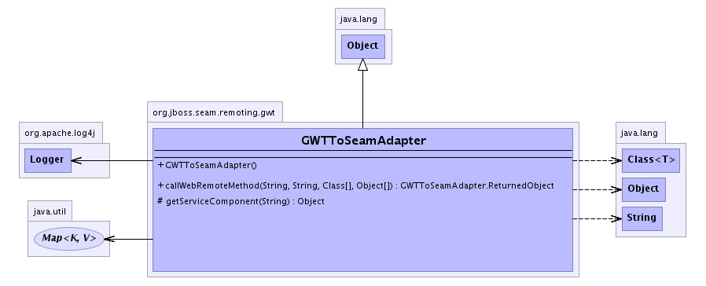

org.jboss.seam.remoting.gwt
Class GWTToSeamAdapter
java.lang.Object
 org.jboss.seam.remoting.gwt.GWTToSeamAdapter
org.jboss.seam.remoting.gwt.GWTToSeamAdapter
public class GWTToSeamAdapter
- extends java.lang.Object
This class adapts GWT RPC mechanism to Seam actions.
-
- 
|
Method Summary |
org.jboss.seam.remoting.gwt.GWTToSeamAdapter.ReturnedObject |
callWebRemoteMethod(java.lang.String serviceIntfName,
java.lang.String methodName,
java.lang.Class[] paramTypes,
java.lang.Object[] args)
Call the service. |
protected java.lang.Object |
getServiceComponent(java.lang.String serviceIntfName)
Return the service component that has been bound to the given name. |
| Methods inherited from class java.lang.Object |
clone, equals, finalize, getClass, hashCode, notify, notifyAll, toString, wait, wait, wait |
GWTToSeamAdapter
public GWTToSeamAdapter()
callWebRemoteMethod
public org.jboss.seam.remoting.gwt.GWTToSeamAdapter.ReturnedObject callWebRemoteMethod(java.lang.String serviceIntfName,
java.lang.String methodName,
java.lang.Class[] paramTypes,
java.lang.Object[] args)
throws java.lang.reflect.InvocationTargetException,
java.lang.IllegalAccessException,
java.lang.SecurityException
- Call the service.
- Throws:
java.lang.reflect.InvocationTargetException
java.lang.IllegalAccessException
java.lang.SecurityException- Parameters:
serviceIntfName - The interface name - this will be the fully qualified name of the remote service interface as
understood by GWT. This correlates to a component name in seam.methodName - The method name of the service being invoked.paramTypes - The types of parameters - needed for method lookup for polymorphism.args - The values to be passed to the service method.
- Returns:
- A populated ReturnedObject - the returned object payload may be null, but the type will not be.
getServiceComponent
protected java.lang.Object getServiceComponent(java.lang.String serviceIntfName)
- Return the service component that has been bound to the given name.